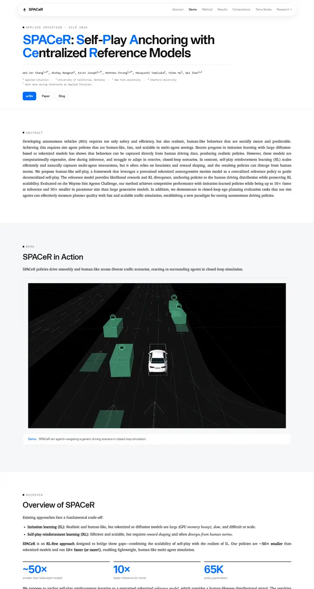

SPACeR: Self-Play Anchoring with Centralized Reference Models
A corporate research report in Swiss order: blue capitals spelling the name, mono bylines, and numbers that stand on black rules.

Checked against the rendered page. Body prose is justified serif across the full 1232px width; mono stack has no webfont so it renders as the system mono.
Why it is here
Swiss and corporate in style: crisp grotesk headings with a blue initial-letter acronym, a floating pill nav, mono metadata, and alternating section bands. The framed dark demo video and the large stat row (~50x / 10x / 65K) show the results clearly.
Overview
Color Palette
Typography
Applied Sans Display
SPACeR: Self-Play Anchoring with Centralized Reference Models
Abstract · Method · Results · BibTeX — 0123456789
Applied Sans Text
SPACeR: Self-Play Anchoring with Centralized Reference Models
Abstract · Method · Results · BibTeX — 0123456789
XCharter
SPACeR: Self-Play Anchoring with Centralized Reference Models
Abstract · Method · Results · BibTeX — 0123456789
Spacing & Shape
Page Modules
Guidelines
More like this

CRAFT: Training-Free Cascaded Retrieval for Tabular QA
A tidy product manual in pale blueprint blue, where every stage wears its own colored edge.

Efficient Self-Evaluation for Diffusion Language Models via Sequence Regeneration
A tidy stack of rounded cards washed in a blue-violet-apricot dawn, signed with a gradient wordmark.

FIGMA: Towards FIne-Grained Music retrievAl
A music journal on warm paper: a heavy Newsreader headline under a red kicker, big red serif numerals for the results, and figures resting in soft cream frames.

GuideDog: A Real-World Egocentric Multimodal Dataset for Blind and Low-Vision Accessibility-Aware Guidance
A quiet monograph page: one serif column, oxblood ink for the links, and a table that blushes only at its own row.

LaMI: Augmenting Large Language Models via Late Multi-Image Fusion
A careful conference handout: Noto Serif headings, navy outlined buttons and soft grey bands taking turns.

PairCoder++: Pair Programming as a Universal Paradigm for Verified Code-Driven Multimodal and Structured-Artifact Generation
A crisp white product page: a blue announcement strip, ink-black pill buttons and every figure on a soft-shadowed card.